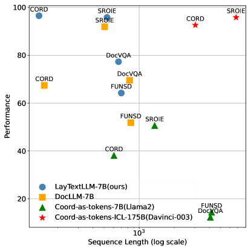
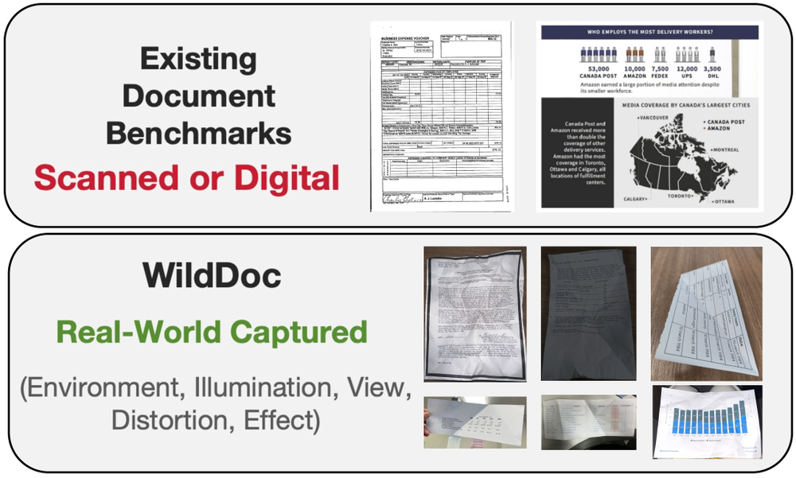
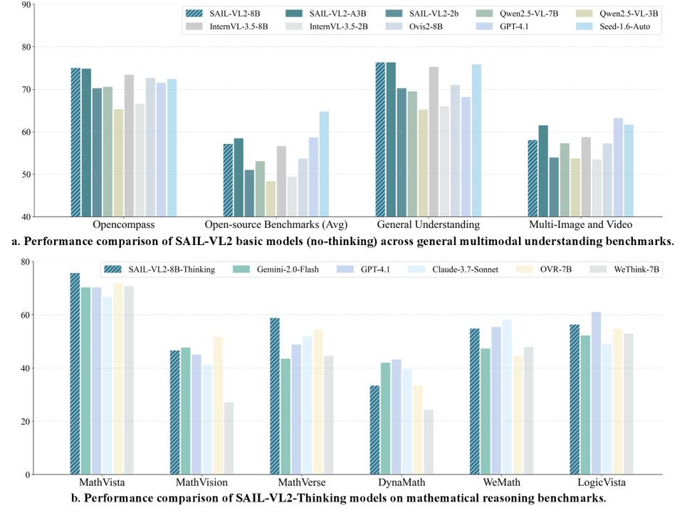
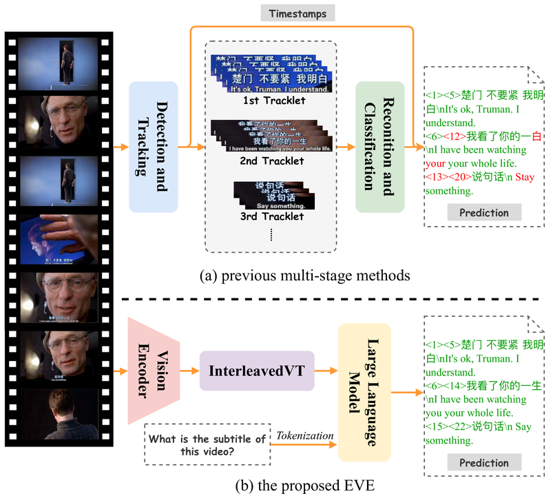
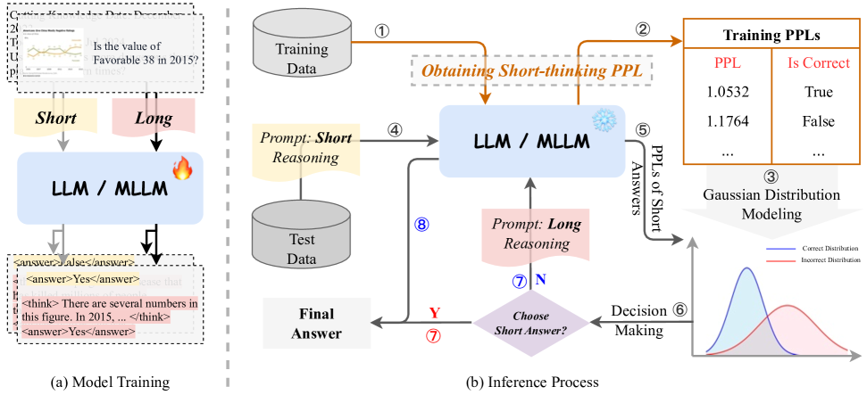

Han Wang
I am an ELLIS Ph.D. student in Computer Science, advised by Prof. Nicu Sebe at the University of Trento and Prof. Hilde Kuehne at the University of Tuebingen.
I also work as a Senior AI Engineer at ByteDance AML, Seed, and Douyin, where I build multimodal large language models for video understanding and industrial-scale training. My research interests include LLMs, MLLMs, video understanding, efficient visual token compression, encoder-free vision-language models, document understanding, and diffusion/flow LLMs.

News
11.2025ChineseVideoBench was released for Chinese video question answering evaluation.
10.2025SAIL-VL2 Technical Report was released.
09.2025Dynamic-VLM was accepted to ICCV 2025.
05.2025WildDoc was released and accepted to EMNLP 2025.
03.2025Vision as LoRA was released with fully open code.
Research
I work on multimodal intelligence that can see, read, track, summarize, and reason over long videos and documents. A recurring thread in my work is making MLLMs both more capable and more practical: reducing visual tokens, removing heavy vision encoders, improving object-level video perception, and scaling training systems to industrial data and model sizes.
Education and Experience
Education
Ph.D. in Computer Science
2025 - 2028 expected
ELLIS Ph.D. student, University of Trento and University of Tuebingen.
M.A. in Electrical and Computer Engineering
2020 - 2023
Shanghai Jiao Tong University.
B.A. in Electronics Engineering; second degree in Mathematics
2016 - 2020
Beihang University.
Industrial Experience
Senior AI Engineer, ByteDance AML, Seed, Douyin
2023 - Present
- Built MLLM systems for video summarization, relevance, grounding, tracking, and RL for MLLMs.
- Developed billion-scale training frameworks and trained models with up to 1,024 GPUs.
- Led VoRA2, an internal encoder-free MLLM trained on 800M samples; contributed to SAIL-VL2.
AI Research Intern, ByteDance
2022 - 2023
AI Research Intern, AI Research Center, HIKVISION Inc.
2022
Selected Publications
 |
Dynamic-VLM: Simple Dynamic Visual Token Compression for VideoLLM
ICCV 2025
Dynamically compresses video tokens so VideoLLMs can balance frame-level details and long-context understanding. |
 |
GLOMA: Global Video Text Spotting with Morphological Association
ICLR 2025
Models video text spotting as global associations and uses Wasserstein distance for morphology-aware tracking. |
 |
Vision as LoRA
Preprint
Explores an encoder-free MLLM where visual capability is encoded through lightweight LoRA layers inside the LLM. |
 |
Elysium: Exploring Object-level Perception in Videos via MLLMs
ECCV 2024
Introduces ElysiumTrack-1M and studies single-object tracking, referring tracking, and video referring expression generation with MLLMs. |
|
 |
A Bounding Box is Worth One Token: Interleaving Layout and Text in a Large Language Model for Document Understanding
ACL Findings 2025
Interleaves text and layout as tokenized bounding boxes for document understanding with large language models. |
|
 |
WildDoc: How Far Are We from Achieving Comprehensive and Robust Document Understanding in the Wild?
EMNLP 2025
Benchmarks document understanding in real-world captured document images beyond scanned and digital-document settings. |
 |
PTSEFormer: Progressive Temporal-Spatial Enhanced Transformer Towards Video Object Detection
ECCV 2022
Aggregates temporal and spatial information progressively for video object detection. |
 |
ChineseVideoBench: Benchmarking Multi-modal Large Models for Chinese Video Question Answering
Preprint
Evaluates open-source and closed-source MLLMs across Chinese video understanding tasks. |
|
 |
SAIL-VL2 Technical Report
Technical Report
A strong MLLM family with broad upgrades across visual, textual, and reasoning capabilities. |
|
 |
EVE: Towards End-to-End Video Subtitle Extraction with Vision-Language Models
Preprint
Replaces multi-stage subtitle extraction with an end-to-end VLM-based approach. |
|
 |
Prolonged Reasoning Is Not All You Need: Certainty-Based Adaptive Routing for Efficient LLM/MLLM Reasoning
Preprint
Routes LLM and MLLM reasoning adaptively using certainty signals instead of always relying on prolonged reasoning. |
More Work
- A Large-scale Sports Tracking Dataset and Progressive Re-detection Based Sports Tracking, Han Wang, Xiaojun Zhou, Qinyu Xu, Huaqiang Ren, Rong Xie, Li Song. VCIP 2022. Paper
- Deep Trajectory Supervision: Deep Supervision Strikes Bike, Han Wang, et al. In submission.
- VideoQFormer: Cross-Modal Video Understanding with Spatio-temporal Querying Transformer, Yuxiang Nie, Han Wang, Yanjie Wang, Guanbin Li, Liang Lin, Can Huang. In submission.
Honors and Awards
- 2020 First Prize, School Scholarship, Shanghai Jiao Tong University
- 2019 Second Prize, School Scholarship, Beihang University
- 2018 Second Prize, College Competition Scholarship, Beihang University
- 2017 Third Prize, National Math Competition for College Students